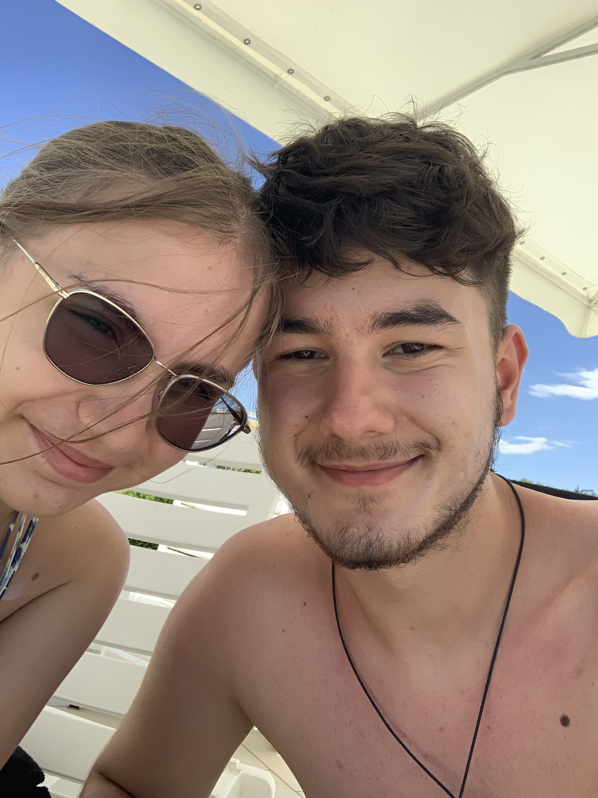
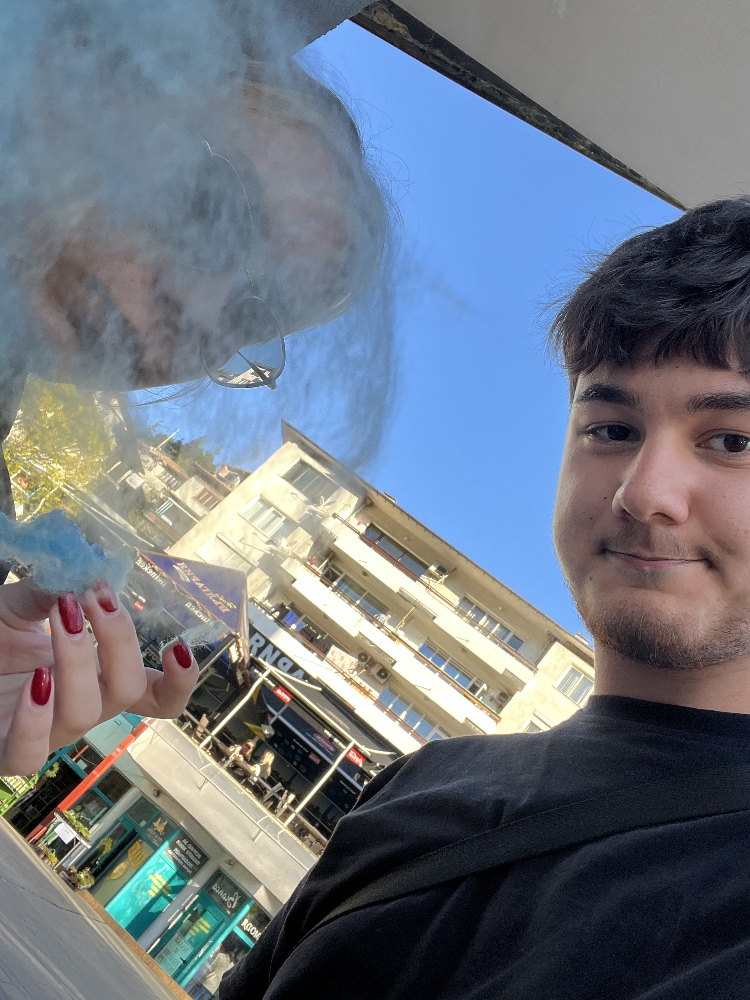

Първият ми незабравим спомен с теб е първата ни почивка. Тогава не бяхме само двамата, а бяхме и с тате, но пак беше супер готино преживяване. Имахме си достатъчно време
само за нас. Няма да забравя всичките ни разходки, обикалянето по ресторантите, гушкането ни заедно, ходенето ни до аквапарка и как играхме волейбол в морето хах. Наистина
беше едно прекрасно изживяване.

Спомен 2
Разбира се втория и най-любимият ми спомен е първата ни среща и първата ни целувка разбира се. Спомням си колко бях притеснен докато пътувах към теб. Въпреки студа, който беше
навън тогава аз целия се бях препотил от притеснение дали ще ме харесаш, но когато слязох от метрото и ти ме видя и ми се усмихна се поуспокоих. Бях притеснен дали няма да ти стане
тъпо, че съм взел само една розичка, но тогава бях приятно изненадан като ти много и се зарадва. Тогава ми стана много миличко, че вместо да ти стане тъпо, че е само едно цвете ти
даже му се зарадва много и силно го оцени, което ме разтопи отвътре. Като поговорихме малко и ми стана ясно, че ти си момиче, което няма дубликат и бях готов на всичко, за да ме
харесаш, но за щастие и ти си ме хареса и ми даде шанс да се попроменя малко хах. Ти си най-прекрасното нещо в живота ми и те оценявам повече от всичко. Поенже нямаме снимка от
първата ни среща ще сложа наша снимка, която много си харесвам.
Спомен 3
Тук ще резюмирам и комбинирам много в едно понеже пак ще стане твърде много съдържание. Имам страшно много спомени с теб любов и те са само хубави. Тук ще комбинирам спомените ни от
всичките нови преживявания, които съм имал и ти си била с мен. С теб пробвах страшно много нови неща, които не съм изживявал като дете например, но ти ме придружаваш във всички тези преживявания
и не ме съдиш за нищо. Оставяш ме да се радвам на детски неща, които съм пропуснал като малък и много оценявам това. Наистина ти благодаря за всички неща, които сме правили заедно.
Може и самите преживявания да са готини, но са много по-приятни когато ти си до мен.

Спомен 4
Почивката ни във Варна е отново едно незабравимо изживяване. Толкова много ти благодаря, че ме заведе на почивка, на която сме си само двамата. Това е първата ми почивка, която
преминава без никакви скандали, без напрежение и само спокойствие. Спомням си всичко от тази почивка. Как играехме билярд, как ходихме на кино, как си купихме дрехи от мола,
разходките ни из Варна включително и среднощните разходки, как гледахме drag queens преди да заспим, всичките ресторантчета, които обиколихме и пробвахме включително и моя
фаворит, който си остана онази пицария. Помня дори и пазаръването ни в лидл хах. Страшно съм ти благодарен, че усоя да уредиш тази почивка понеже и двамата имахме нужда от нещо такова
и беше прекрасно изживяване. Ще сложа лубимата ми твоя снимка от тази почивка.
Спомен 5
Тук ще спомена еразъма. Наистина си заслужаваше да отидем. Въпреки факта, че някои от хората(СУС) ни преебаваха малко всичко беше готино. Дори и да не разбирах почти нищичко
от всичко, което се говореше в лекциите ми беше забавно. Обиколките по градчетата с другите бяха готини понеже не съм очаквал такива забутани в планината градчета да са толкова
яки. Като цяло беше готино и грам не съжалявам, че отидохме.